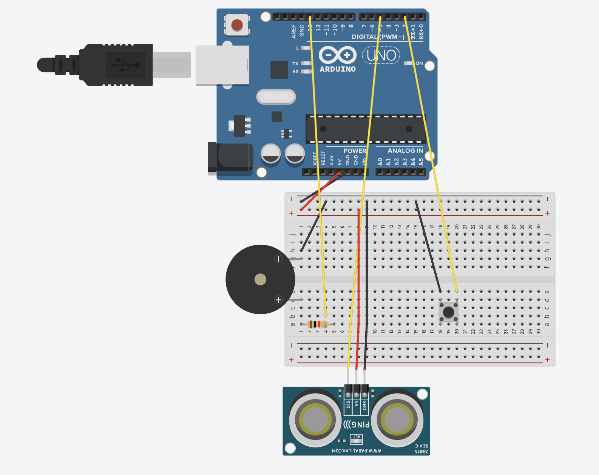
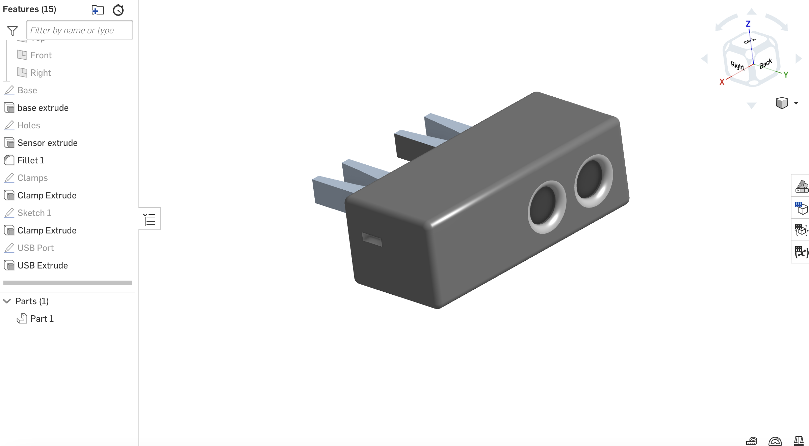

TinkerCAD, CAD, and Circuit Screenshots

TinkerCAD

CAD

Circuit
Source Code
#define trigPin 12
#define echoPin 5
#define buttonPin 2
int buzzer = 13;
bool checker = false;
bool previousButtonState = HIGH; // Initial state of the button
void setup() {
Serial.begin(9600);
pinMode(trigPin, OUTPUT);
pinMode(echoPin, INPUT);
pinMode(buzzer, OUTPUT);
pinMode(buttonPin, INPUT_PULLUP); // Internal pull-up resistor
}
void loop() {
bool buttonState = digitalRead(buttonPin);
if (buttonState == LOW && previousButtonState == HIGH) {
checker = !checker; // Toggle checker state
}
previousButtonState = buttonState;
while (checker) {
noTone(buzzer);
long duration, distance;
igitalWrite(trigPin, LOW); // Added this line
delayMicroseconds(2); // Added this line
digitalWrite(trigPin, HIGH);
delayMicroseconds(10); // Added this line
digitalWrite(trigPin, LOW);
duration = pulseIn(echoPin, HIGH);
distance = (duration / 2) / 29.1;
Serial.println(distance);
//Distance if door opens
if (distance less than 130) {
tone(buzzer, 1000);
}
// Check button state again
buttonState = digitalRead(buttonPin);
if (buttonState == LOW && previousButtonState == HIGH) {
checker = false;
}
previousButtonState = buttonState;
}
}